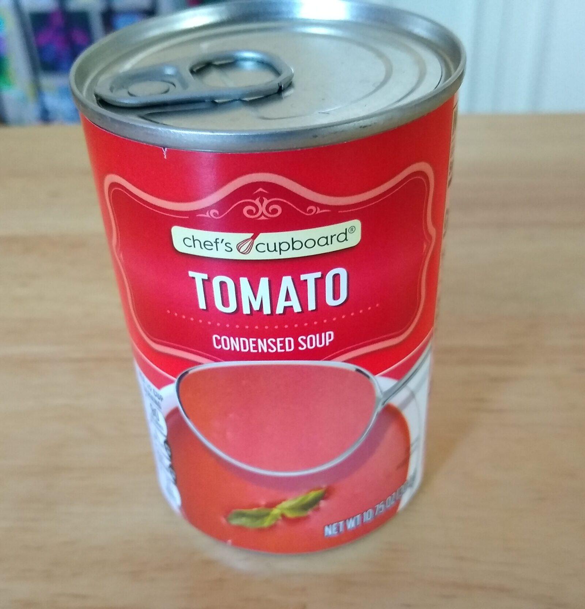

Tomato Soup

Description
Growing up, my second favourite lunch on a Saturday afternoon was - you guessed it - tomato soup. There was something about the tomatoey goodness that really just tasted good.
This recipe is especially delicious if you use fresh sourdough bread (made from scratch or from the bakery) to dip into the soup.
Ingredients
- Tomato soup
- Bread (sourdough preferred)
Steps
- Put the soup on a low heat, making sure to stir regularly. Do not let the soup reach a boil as this impacts the flavour and texture negatively.
- Put your bread on a plate.
- Pour soup into a bowl.
- Enjoy!
Back to recipes page